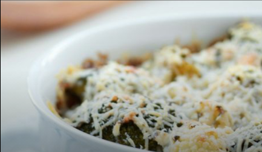
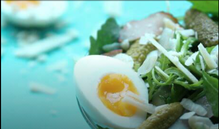
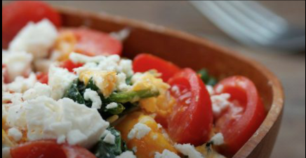
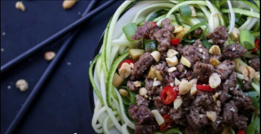
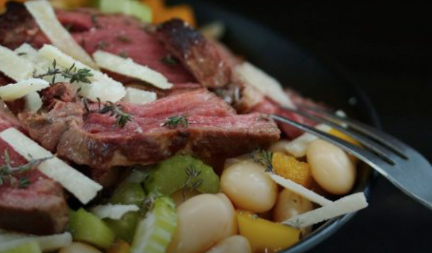
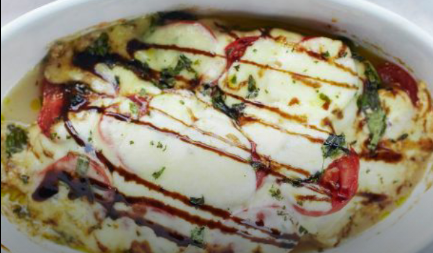

Preparacion
1) Cocinar en una sartén el coliflor con la zanahoria, choclo y manteca
2) Agregar huevos y las semillas de sésamo, sazonar con sal y pimienta
Casserola de Coliflor y Broccoli

200g Coliflor
200g Brócoli
200g Ricota
½ Cucharada Nuez moscada
½ Cucharada Tomillo
100ml Agua
30g Queso rallado
1 Cucharada Aceite
Sal, pimienta para sazonar
Colocar brócoli y coliflor en la olla
Mezclar ricota, nuez moscada, agua, romero para hacer una salsa, sazonar con sal y pimienta
Verter salsa en los vegetales, cocinar por aprox30 min, esparcir queso rallado al poner en el plato
Casserola de Coliflor y Broccoli

2 Huevos cocidos
40g Cebolla en pickles
40g Pepinillos en pickles
80g Jamón Cocido
20g Queso Parmesan
50g Rucula
½ Limon (jugo)
2 Cucharadas aceite de oliva
Pimienta para sazonar
Cortar las verduras en rodajas, mezclar toda la ensalada.
Agregarle los huevos cortados por la mitad
Ricota con huevos revueltos

3 Huevos
100g Ricota
1 Tomate picado
40g Espinaca
1 Cucharada aceite
Nuez moscada, Sal, Pimienta para sazonar
Cocinar Espinaca y tomate en una sartén hasta que se Ablande la espinaca
Romper los huevos arriba y cocinar hasta deseada consistencia
Esparcir ricota encima de los huevos, dejar hasta que caliente y servir
Carne con Zucchini crocante

200g Carne
1 Zucchini
1 Cebolla de Verdeo
20g Maní sin sal
1 Diente de ajo
5g Jengibre
½ Chili picante
½ Limón (jugo)
1 Cucharada Salsa de Soja
2 Cucharadas de Miel
Cocinar carne con sus jugos, a la mitad de la cocción agregar Jengibre, Chili picante, limón, salsa de soja, miel, ajo, terminar de cocinar la carne
Agregar Zucchini, Cebolla de verdeo a la cocción, cocinar por 5 minutos aprox
Servir y agregar maní picado arriba
Ensalada de Poroto y Carne

150g Carne
50g Porotos blancos
1 Pimentón
1 Tallo de Apio
20g Queso rallado
1 Cucharada Tomillo o hierbas italianas
1 Cucharada aceite
1 Cucharada vinagre balsámico
Chili picante, Sal, Pimienta para sazonar
Cocinar carne cortada en tiras con aceite
Picar Apio finamente y el Pimentón
Cocinar todo junto con la carne, condimentar Tomillo o hierbas italianas y vinagre balsámico
Servir y espolvorear con queso rallado
Pollo Caprese

125g de pollo
100g Mozzarella bajo en grasa
1 y ½ Tomates
½ Cucharada de orégano
4 cucharadas de Aceite de oliva
3 cucharadas de Vinagre balsámico
Precalentar horno a 200°c
Agregar de base 2 cucharadas de aceite de oliva, agregar Pollo, sazonar con sal y pimienta
Cortar mozzarella y tomate en rodajas, colocar arriba del pollo, espolvorear con orégano
Agregar el aceite de oliva restante y vinagre balsámico arriba y cocinar en horno por 25 minutos
Pollo picante con Brócoli
200g Pollo
300g Brócoli
1.5 Cucharadas de salsa de chili picante
4 Cucharadas de Aceite de oliva
Sal, Pimienta para sazonar
Hervir agua y cocinar brócoli por aprox 5 minutos
Cocinar pollo con aceite
Procesar o picar brócoli hasta que consiga una consistencia parecida al arroz
Servir pollo con brócoli sazonado con chili picante